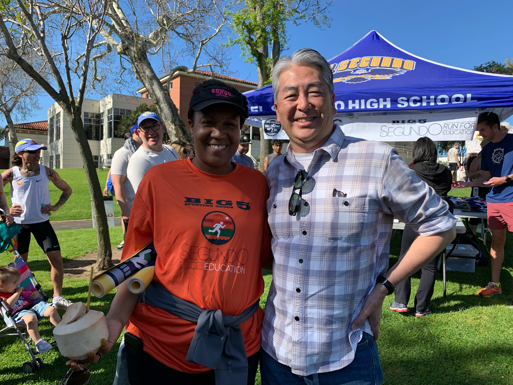

About Dieema
Candidate Statement

As a proud mother, resident, and active parent in the El Segundo Unified School District (with two ESHS graduates and one ESHS freshman), I am asking for your vote as I seek reelection to the El Segundo Unified School District Governing Board. Our students deserve our support, and I will continue to work hard to ensure they receive the educational experience they deserve. I believe in our educational community, fostering a positive learning environment for all students, and building meaningful connections within our community.
Our town is known for our schools and the dedicated community members and community partners who work together. I will continue to be your voice on the School Board. I pledge my ongoing commitment to listen to you and to work hard to maintain and enhance the cohesive relationships with Board members, district personnel, staff, teacher, and parents, all in the name of excellence for our students.
My extensive work experience in Fortune 500 Companies enables me to contribute to the ongoing success of our district. I began my professional career as a Certified Public Accountant (CPA) with the global accounting firm KPMG, later working in finance for Universal Music, and Sony Pictures Entertainment. Currently, I serves as the Director of Talent Management at a M&A consulting and advisory firm, where I utilize my CPA license and Senior HR credentials (SHRM-SCP) to ensure the firm operates efficiently, complies with regulations, and manages its workforce strategically.
For over a decade, I remain committed to serving students, schools, and community. I have served on the Center Street School PTA Executive Board as Treasurer, where I was awarded the Honorary Service Award for revamping the PTA’s financial process for greater accountability and efficiency. Later, I served as PTSA Treasurer at the El Segundo Middle School, implementing the same process. For many years I volunteered at Center Street School in various capacities including Trash Free Clean-up, Frozen Fridays, class art docent, event volunteer, and room parent. I actively support the El Segundo ED! Foundation, and have modeled for Ladies Night Out. I proudly support and attend the annual Ed! Gala, and have consistently been a Superintendent's Round Table contributor. Elected to the El Segundo Unified School District Board in 2020, I have served as Vice President (2022), and President (2023), as well as served on various ad-hoc committees in support of further strengthening district and community relations. Together with my daughters, through our membership in the Beachside Chapter of the National Charity League (NCL), a mother/daughter philanthropic organization, we have actively volunteered our time served various El Segundo community partners and non-profits. On a local level, I have served as NCL's Beachside Chapter's Vice President of Communications and Grade Level Advisor, mentoring young ladies through leadership and service. I am proud of my recent appointment to the NCL Board, where I serve as a newly installed National Board of Director.
My north star is family, and together with my husband, Andrew, and our three children, we prioritize service as a family. It is because of my family that I am able to truly serve with an “I CARE” spirit:
Integrity
Compassion
Accountability
Respect
Excellence
I will continue to work hard for the overall success of our school district, Our Children, Our Community, and Our Future. Please cast your vote for Dieema A. Wheaton to re-elect me to the El Segundo School Unified School District Governing Board.
My Beliefs

- Every child deserves the right to a free quality education
- Children have the right to feel safe, nurtured and accepted at school
- Adults, teachers, parents, administrators, and district personnel are to model respectful behaviors, fairness, and equity for every child.
- We need to provide teachers and students with the support they need to succeed within the classroom
Career Summary

- KPMG (1998-2002) - Certified Public Accountant (CPA)
- Universal Music & Video Distribution, Associate Director of Finance (2002-2005)
- Homemaker, child rearing (2005-2009)
- Sony Pictures Entertainment, Finance Manager (2009-2011)
- Homemaker, child rearing (2011-2017)
- Palm Tree, Director of Talent Management (2017-Present)
PTA/School Volunteer Summary
Center Street School (CSS):
- Trash Free Clean-up volunteer (2011-2012)
- Frozen Fridays Chair (2012-2013)
- Art docent (2013-2014)
- Room mom (2013-2014) & (2015-2016)
- CSS PTA Treasurer (2014-2015) & (2015-2016)
- Honorary Service Awardee (2015-2016)
- Class Volunteer (2016-2017)
El Segundo Middle School (ESMS):
- ESMS PTSA Treasurer (2018-2019)
PTA Member:
- Center Street School (2011 – present)
- El Segundo High School (2019 – present)
- El Segundo Middle School (2016 – present)
- Richmond Street School (2020 - present)
Ed! Foundation Supporter:
- Ladies Night Out Model (November 19, 2015)
- Ed! Gala contributor (2016 – present)
- Ed! contributor (2011 - present) / Superintendent’s Roundtable contributor (2016 - present)
National Charity League:
- VP Communications (2018-2019)
- Grade Level Advisors for 2023 (2020-2021) and (2021-2022)
- National Board of Director of NCL, Inc. (installed 2024)
El Segundo Unified School Board
- Elected as a Governing Board Member (2020)
- ESUSD Board President (2022-2023)
- ESUSD Board Vice President (2021-2022)